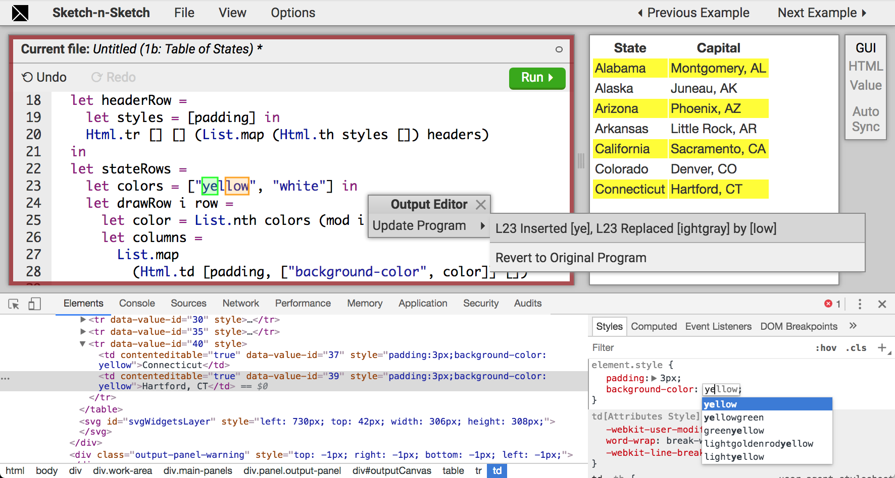
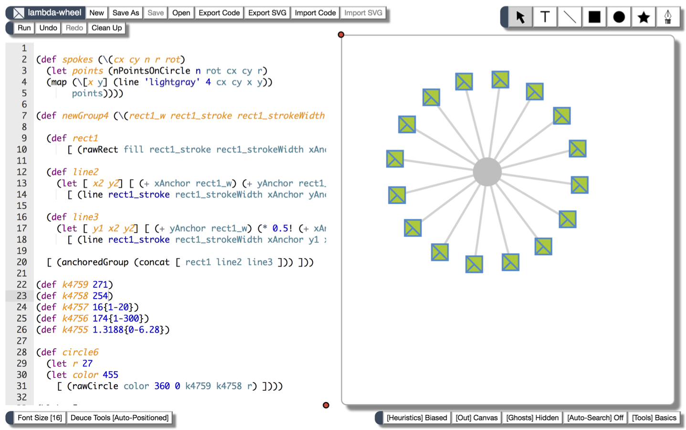
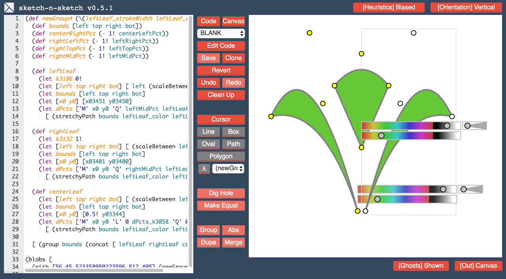
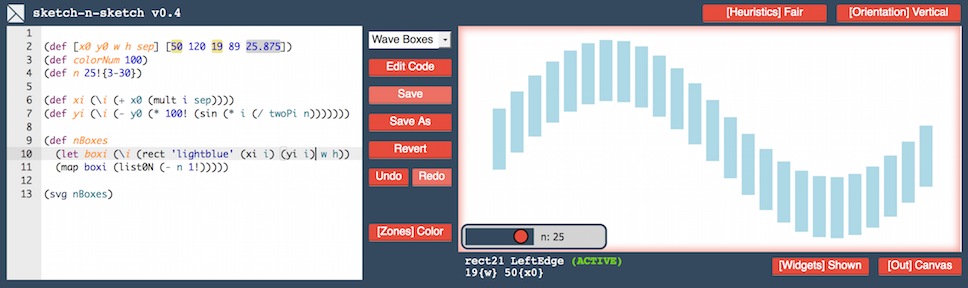

Latest Version: v0.7.1
Descriptions of the major milestones and a list of older versions are below.
Descriptions of the major milestones and a list of older versions are below.
Demos at elm-conf and ICFP Tutorials in September 2018:
This milestone introduces a new Elm-like source language, called Leo, and support for generating and directly manipulating HTML output. Under the hood, we use a new bidirectional evaluation algorithm that reconciles output changes with the program.
This milestone introduces Deuce, a text editor that is augmented with support for structurally selecting code items and then invoking automated program transformations called code tools. Code tools help with various prototyping, repair, and refactoring tasks that arise when programming. To try it out, hold down the Shift key when hovering over the code box, and start clicking things.
Starting v0.6.1, Sketch-n-Sketch no longer requires a larger stack in Chrome, and v0.6.3 addresses additional stack issues.
This milestone introduces direct manipulation tools for drawing new shapes in the output, relating attributes of shapes, and grouping and abstracting shapes. Each of these tools is paired with program transformations that match the desired operations. Together, these tools reduce some of the text-based programming burden required to generate certain graphic designs.
This version may introduce performance issues. If the application crashes with "too much recursion," try running with a larger stack (e.g. open -a "Google Chrome" --args --js-flags="--stack-size=8192").
This milestone introduces live synchronization, which allows the user to directly manipulate shape attributes (such as positions, size, and color) in the output of a program, and Sketch-n-Sketch attempts to infer updates to program constants in real-time to match the changes.
 v0.7.0
 v0.6.2
v0.6.2
 v0.6.0
 v0.5.1
 v0.4

 v0.0
v0.0